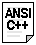
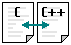

|
Introduction Instructions for use | |
|
| |
|
Introduction Instructions for use | |
|
| |
If you are familiar with C language you can take the first 3 parts of this tutorial (from 1.1 to 3.4) as a review, since they mainly explain the C part of C++.
Part 4 describes object-oriented programming.
Part 5 mostly describes the new features introduced by ANSI-C++ standard.
Many sections include an additional page with specific examples that describe the use of the newly acquired knowledge in that chapter. It is recommended to read these examples and be able to understand each of the code lines that constitute it before passing to the next chapter.
A good way to gain experience with a programming language is by modifying and adding new functionalities by your own to the example programs that you can fully understand. Don't be scared to modify the examples provided with this tutorial. There are no reports of people whose computer has been destroyed due to that.
During this tutorial, the concepts that have been added by ANSI-C++ standard which are not included in most older C++ compilers are indicated by the following icon:
 <- new in ANSI C++
Also, given the enormous extension that the C language enjoys (language which C++ derives from), it will also be included an icon when the topic explained is a concept whose implementation is clearly different between C and C++ or that is exclusive of C++:
 <- different implementation in C and C++
All C++ compilers support the compilation of console programs. If you want to get more information on how to compile the examples that appear in this tutorial, check the document Compilation of Console Programs, where you will find specific information about this subject for several C++ compilers existing in the market.
| © The C++ Resources Network, 2000-2001 - All rights reserved |
|
Previous: Main Menu |
index |
Next: 1.1 - Structure of a C++ program |